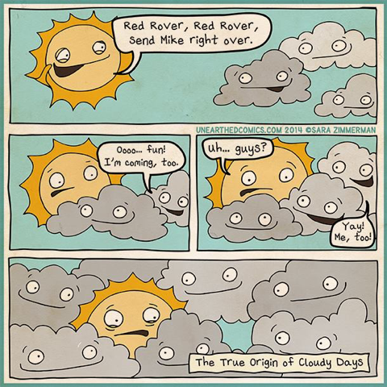
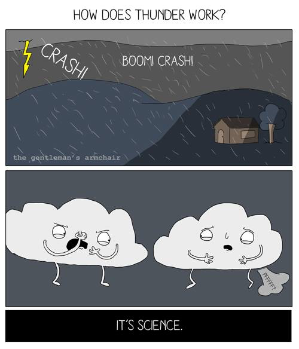

Matthew 16:3
And in the morning, ‘It will be stormy today, for the sky is red and threatening.’
You know how to interpret the appearance of the sky, but you cannot interpret the signs of the times.
Assignments this week (click me!)
Student Notebook hyperlinks for Chapter 8:
p. 100 in the SNB: link.apologia.com/ECPS2N/8.1 Tornados webpage by Weather Whiz Kids
p. 100 in the SNB: link.apologia.com/ECPS2N/8.2 Hurricanes webpage by Weather Whiz Kids
Required Videos and Links:
Sleet and Freezing Rain: What's the Difference?
How Hail Forms:
The Science behind Hurricanes
BBC Weather How do hurricanes form?
Talking Tropics: Hurricane Structure
Hurricane vs. Tornado: What's the difference?
Optional but Helpful:
Talking Tropics: Hurricanes Vs. Typhoons Vs. Cyclones
Why Hurricane Categories Make a Difference
Vocabulary Flashcards on Quizlet
Chapter 8 flash cards

